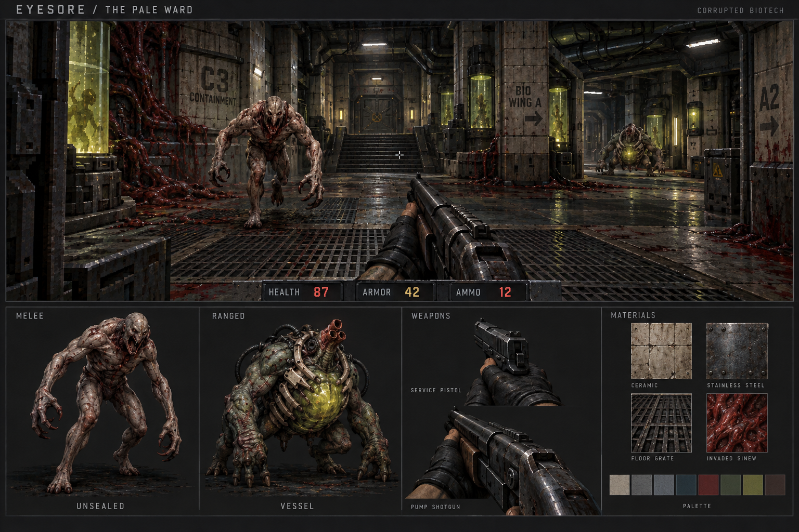
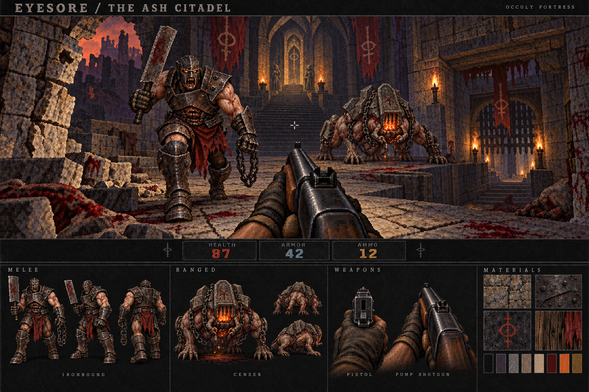
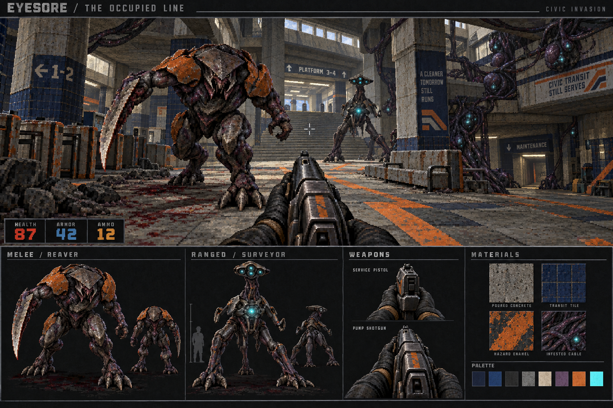
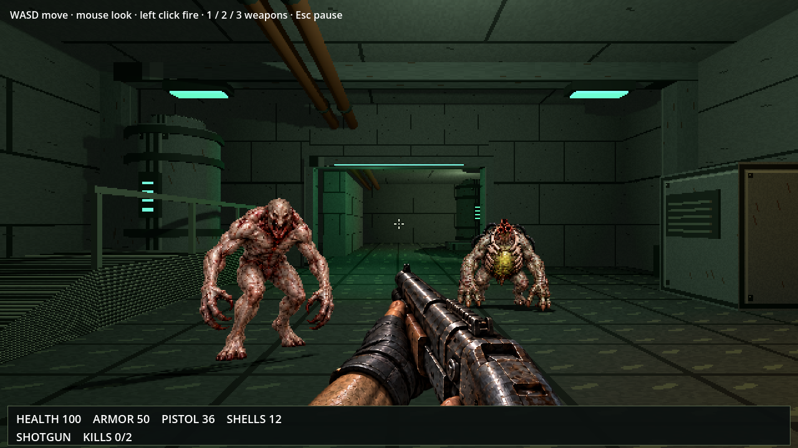
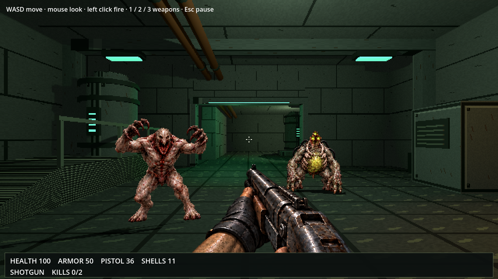
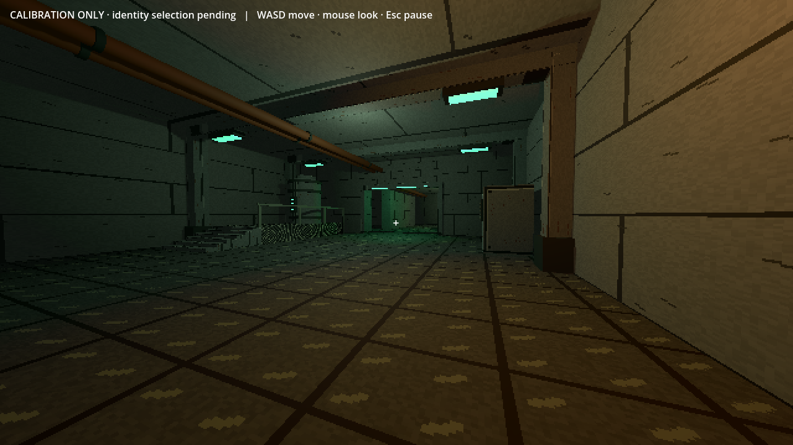
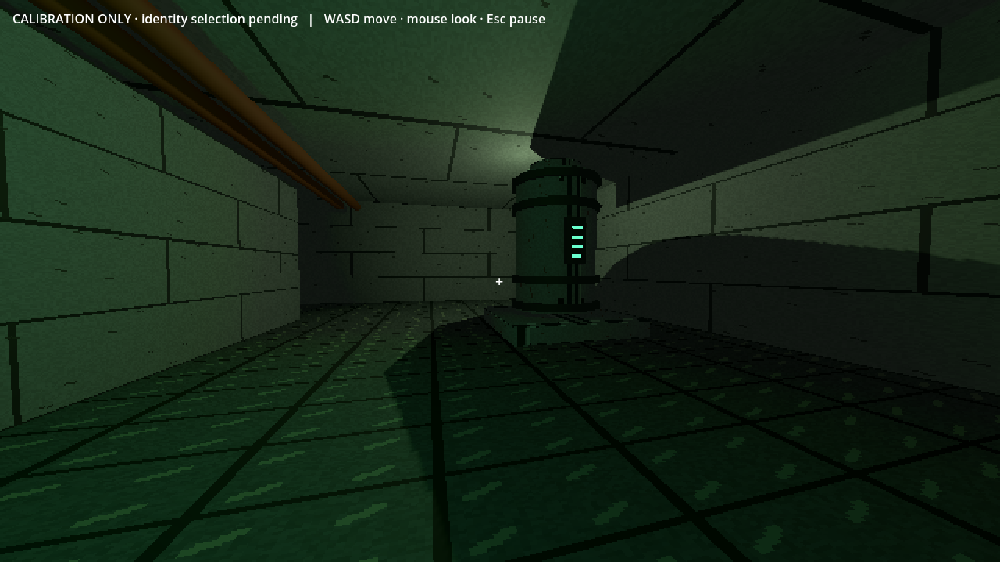

Rebuilt visual directions.
Revised after your feedback: textured room depth, solid weapon forms and stronger creature anatomy, guided by classic Doom. The music is retained.
The Pale Ward / corrupted biotech was selected on 9 October 2026. These concept packets remain the quality target; integrated combat/art review is the next gate.
Dry Doom/Quake-style damage and enemy voice review ↗ · Abelian is now menu music; this review includes separate level music candidates.
The Pale Ward
Corrupted biotech facility · Sterile geometry. Flesh without permission.

320×180 scale test, enlarged 2× to 640×360 · generated static artwork
Reading the fight
The Unsealed has a substantial pursuing body, long gripping forearms and a reaching stride. The Vessel has a much broader grounded mass and an exposed spore sac/nozzle that identifies ranged pressure. Raised central stairs and a side branch establish distinct depth planes.
Production considerations
High. Sculpted anatomy and containment hardware would need original models or deeply shaded hand-painted sprites, followed by deliberate animation and game-scale cleanup. Modular ceramic/steel architecture can share a restrained texture set.
Music · 25 seconds
Recorded guns and impacts · 10 seconds
Music with warnings · 25 seconds
Compare at the same device volume. These are sourced and edited auditions. You liked the music. Sound effects and actual game mixing still need listening review.
Open question
This board leans toward detailed contemporary rendered horror more than the classic digitized finish. The 16:9 scene crop preserves both threats and forward gun but shifts the original crosshair slightly left. The scene creature representation and close-up study are approximate rather than locked model geometry.
Palette, materials, enemy / gun designs and HUD thumbnail

The Ash Citadel
War-torn occult fortress · A siege that became a sacrament.

320×180 scale test, enlarged 2× to 640×360 · generated static artwork
Reading the fight
Ironbound is tall, heavily armored and carries a clearly readable cleaver for close-range pressure. Censer spreads a low four-legged mass under an ossuary shell, with an ember mouth identifying ranged fire. Stair fronts, parapets and the descending side gate make the room three-dimensional.
Production considerations
Medium-high. Armor and masonry can be modular, but the large cleaver attack and four-legged creature need planned weight transfer and consistent shaded poses. A modeled render-to-sprite pipeline would need careful low-resolution cleanup.
Music · 25 seconds
Recorded guns and impacts · 10 seconds
Music with warnings · 25 seconds
Compare at the same device volume. These are sourced and edited auditions. You liked the music. Sound effects and actual game mixing still need listening review.
Open question
The generator added a few static alternate-view creature studies rather than only one pose; these are not a complete animation or rotation set. Small details and exact limb geometry vary between the scene and studies. Material samples are illustrative and not proven seamless.
Palette, materials, enemy / gun designs and HUD thumbnail

The Occupied Line
Invaded civic megastructure · Public space. Private extinction.

320×180 scale test, enlarged 2× to 640×360 · generated static artwork
Reading the fight
Reaver uses powerful legs, low skull and a fused cutting arm for close pursuit. Surveyor raises a sensor crown above a weighted three-point stance; cyan organs convey ranged aiming. Thick concrete members, ticket gates and level changes establish the public-space scale.
Production considerations
Medium-high. Concrete and transit materials are reusable. Reaver attack articulation and Surveyor’s tripod locomotion require deliberate original production assets and shaded animation studies.
Music · 25 seconds
Recorded guns and impacts · 10 seconds
Music with warnings · 25 seconds
Compare at the same device volume. These are sourced and edited auditions. You liked the music. Sound effects and actual game mixing still need listening review.
Open question
This generated concept is not an importable sprite set or a runtime scene. Creature anatomy and gun construction must be locked in a later model/paint pass. Surface swatches have not been tested for tiling. The central16:9 export omits the left-positioned HUD and crops the near blade at the left boundary; the untouched board preserves both. The original crosshair shifts slightly left in this export.
Palette, materials, enemy / gun designs and HUD thumbnail

Current game: approved Pale Ward artwork in use
The approved design now appears as transparent creature and weapon sprites in the real Godot room. These are actual integrated captures with fixed enemy placement, not concept overlays. The original composition also appears as title art. Eight frontal monster poses and four weapon poses are representative; full directional production remains pending.


Preserved movement-only Godot room preview
Connected spaces, thick doorway, walkable raised service platform, pipes and machinery, original pixel materials and cast shadows. These are actual Godot captures. Production enemy and weapon sprites are still pending.


Compare all three directions
| Direction | Readability / identity | Production considerations | Music audition |
|---|---|---|---|
| The Pale Ward | The Unsealed has a substantial pursuing body, long gripping forearms and a reaching stride. The Vessel has a much broader grounded mass and an exposed spore sac/nozzle that identifies ranged pressure. Raised central stairs and a side branch establish distinct depth planes. | High. Sculpted anatomy and containment hardware would need original models or deeply shaded hand-painted sprites, followed by deliberate animation and game-scale cleanup. Modular ceramic/steel architecture can share a restrained texture set. | Abelian Music praised by you; final gameplay mix still pending. |
| The Ash Citadel | Ironbound is tall, heavily armored and carries a clearly readable cleaver for close-range pressure. Censer spreads a low four-legged mass under an ossuary shell, with an ember mouth identifying ranged fire. Stair fronts, parapets and the descending side gate make the room three-dimensional. | Medium-high. Armor and masonry can be modular, but the large cleaver attack and four-legged creature need planned weight transfer and consistent shaded poses. A modeled render-to-sprite pipeline would need careful low-resolution cleanup. | Dragged Through Hellfire Music praised by you; final gameplay mix still pending. |
| The Occupied Line | Reaver uses powerful legs, low skull and a fused cutting arm for close pursuit. Surveyor raises a sensor crown above a weighted three-point stance; cyan organs convey ranged aiming. Thick concrete members, ticket gates and level changes establish the public-space scale. | Medium-high. Concrete and transit materials are reusable. Reaver attack articulation and Surveyor’s tripod locomotion require deliberate original production assets and shaded animation studies. | The Recon Mission Music praised by you; final gameplay mix still pending. |